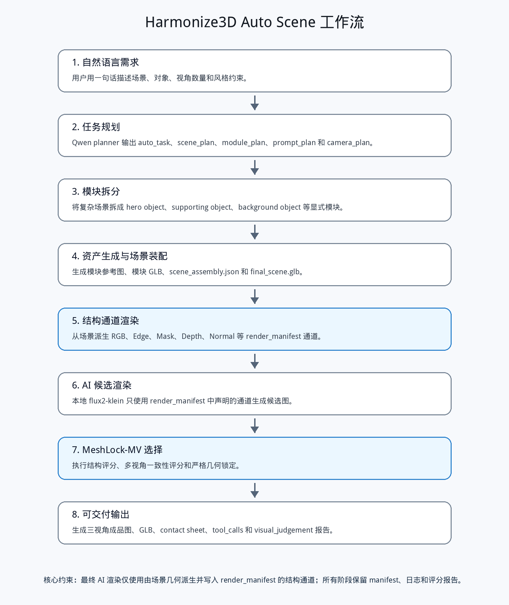

Harmonize3D：从单图 3D 闭环到全场景生成流程的阶段性研究报告
作者：Harmonize3D Project
版本：可交付论文稿 v1.1
日期：2026-06-16
摘要
Harmonize3D 是一个面向 3D 生成、结构通道约束和多视角 AI 渲染的本地工作流。项目的核心目标不是单纯生成一张好看的图片，而是把自然语言、单图参考、3D 白模、固定相机、结构通道、AI 渲染和自动评分连接成可检查、可复现的流程。
本文首先总结项目总体构建方式，然后补充前期已经完成的单图/单模型全流程成果。前期流程已经从单张参考图生成 Hunyuan3D 白模，进入 Web 工作台进行真实 3D 预览与相机锁定，再由 Blender 输出白模 RGB、Edge、Mask、Depth、Normal 等通道，最终让 AI 渲染只使用模型派生通道生成图像。该单模型流程已经产出可视化结果、对照图和 Agent 报告，白模质量记录为 312,693 vertices、625,706 faces，流程测试通过 17 项 pytest、Playwright 前端验证和图像加载检查。
在单模型基础上，项目进一步探索了多视图一致性和结构锁定。Flux2 多视图 Agent 实验取得了 0.852016 的多视角一致性总分；Z-Image ControlNet + adaptive MeshLock 验证中，三视图 direct mean total 为 0.290440，而 MeshLock 后 final mean total 提升到 0.932607。这说明项目早期成果并不止于单张图片，而是已经围绕“真实模型视角、结构通道、多视图评分”形成了对象级验证。
当前论文进一步把该方法推进到全场景全流程：从一句“未来汽车发布会展台”的自然语言需求出发，规划多个场景模块，生成概念、模块参考、模块资产、场景装配、三视角结构通道和最终 AI 渲染。正式 demo 使用 qwen3.7-plus 作为规划模型，产出 8 个场景模块和 3 个视角，视觉判断状态为 pass，多视角一致性为 0.870261，模块存在评分为 0.833333。需要明确的是：当前全场景版本仍处在 demo/prototype 阶段，已经跑通流程和交付物，但由于时间不足，真实模块级 image-to-3D、完整 Blender 场景渲染、稳定美学质量、规模化评测和生产级鲁棒性尚未充分完成。
关键词：Harmonize3D；图像到 3D；结构约束；多视角一致性；MeshLock；AI Agent；全场景生成
1. 引言
生成式图像模型已经能够快速产生高质量视觉概念，但在 3D 内容生产中仍然存在明显缺口。产品渲染、汽车展示、电商主图和发布会展台设计不仅需要“视觉上好看”，还需要遵守对象结构、相机视角、模块位置和多视角一致性。若只把一句 prompt 输入图像模型，系统很难解释生成结果为什么偏离，用户也很难判断问题出在参考图、3D 模型、相机、结构控制还是最终渲染阶段。
Harmonize3D 的工作思路是把图像模型从自由生成器改造成受控渲染后端。系统先建立可检查的 3D 结构，再从结构中派生通道，最后让 AI 渲染在这些通道约束下生成结果。这样，最终图像不再是一次不可审计的黑盒输出，而是一个由 3D 模型、相机状态、渲染通道和 Agent 报告共同约束的交付物。
本文补充两部分此前缺失的信息。第一，前期单图/单模型流程已经成功跑通，并有完整报告和图像结果。第二，单模型阶段还进行了多视图一致性与 MeshLock 验证，为当前全场景扩展提供了技术基础。本文随后说明当前论文版本是在上述对象级成果之上进一步尝试“全场景全流程”，但该部分目前应被界定为 demo/prototype，而不是已经完全落地的成熟系统。
2. 项目总体构建
Harmonize3D 的总体构建可以理解为六个层次。
第一层是需求理解层。系统接收自然语言请求，识别主体对象、环境、场景风格、输出视角和质量约束。在当前全场景 demo 中，这一层由兼容 OpenAI API 的 Qwen planner 完成，并保留规则扩展作为 fallback。
第二层是 3D 资产层。早期单模型流程使用单张图像生成或加载白模；当前全场景流程则把复杂请求拆成多个模块，例如主车、展示台、灯带、屏幕、机械臂和地面。每个模块都有语义角色、尺寸、位置和失败策略。
第三层是交互定帧层。用户或系统需要明确相机状态，包括视角、距离、目标点和画幅比例。前期工作台已经支持真实 3D 模型预览、旋转、缩放、平移和固定视角，并把浏览器中的相机状态传给后端。
第四层是结构通道层。系统使用 Blender 或程序化渲染器从真实 3D 模型/场景输出 RGB、Edge、Mask、Depth、Normal 等通道。这些通道是最终 AI 渲染的结构依据。
第五层是 AI 候选渲染层。最终图像生成阶段不直接使用未声明的原始输入图或概念图，而是读取 render manifest 中声明的结构通道。该策略保证 AI 渲染受到几何和相机约束。
第六层是 Agent 评分与打包层。系统对输出图进行结构评分、多视角一致性评分、模块存在评分和视觉判断，并生成 contact sheet、对照图、JSON 报告和可交付文件。
图 1 概括了从请求到交付的 Auto Scene 流程。

3. 前期成果：单图/单模型全流程已经跑通
前期报告 harmonize3d_body.pdf 记录了一个更聚焦的成功闭环：从单张汽车参考图出发，生成或加载 Hunyuan3D 白模，在 Web 工作台中预览真实 3D 模型并锁定相机，然后使用 Blender 输出固定视角的白模通道，最后由 AI 模型生成受结构约束的产品渲染图。
这一阶段的重要原则是：最终 AI 渲染只允许使用真实 3D 模型在固定相机下派生的 RGB 和 Edge 等通道，而不是直接复用 Hunyuan3D 的原始输入图。这样可以避免“看似成功但实际绕过 3D 模型”的问题。
图 2 展示了单图输入经过预处理后的主体参考。该图用于 3D 资产阶段，而不是最终 AI 渲染阶段的直接参考。

图 3 展示了 Web 工作台中的真实 3D 预览与固定视角。该工作台支持用户旋转、缩放、平移和锁定相机，前端相机状态会被写入后端渲染请求。

图 4 是锁定相机后的白模渲染，代表最终 AI 渲染使用的模型派生结构依据。

图 5 是基于模型通道生成的最终 AI 渲染图，图 6 是白模参考和最终图的对照。


该阶段的关键记录如下。
| 项目 | 结果 |
|---|---|
| 白模顶点数 | 312,693 |
| 白模面数 | 625,706 |
| bbox ratio | 3.78513 |
| components | 6 |
| max component face ratio | 0.999546 |
| mesh sanity | pass |
| background remover | true |
| 测试状态 | 17 项 pytest 通过，前端 Playwright 流程通过 |
Agent 报告同时记录了结构评分和复核状态：edge F1 为 0.035240，mask IoU 为 0.420527，background cleanliness 为 0.954219，总分为 0.494008，状态为 needs_review。这里的 needs_review 不代表流程失败，而是说明早期评分器对边缘一致性较严格，且单模型最终图虽然视觉可用，但结构评估仍需要人工复核。
前期单模型成果的价值在于它证明了完整链路可行：单图参考可以生成白模，白模可以进入可交互工作台，相机可以被精确传给 Blender，Blender 可以输出结构通道，AI 渲染可以只依赖模型派生通道生成结果，Agent 可以记录过程并产出报告。
4. 单模型多视图一致性与结构锁定扩展
单模型流程跑通后，项目继续验证多视图一致性。该部分不是全场景实验，而是对象级技术验证，目的是确认同一个模型在多个视角下能否保持主体形状和外观一致。
图 7 展示了单模型三视图 Agent 输出。三个视角分别来自固定模型和相机计划，而不是彼此独立的 prompt 随机生成。

Flux2 多视图实验的核心指标如下。
| 视角 | total | mask IoU | edge F1 | 说明 |
|---|---|---|---|---|
| view_locked | 0.826449 | 0.909773 | 0.272633 | 结构保持较好 |
| view_left_30 | 0.788799 | 0.882876 | 0.242936 | edge chamfer 偏低 |
| view_right_30 | 0.870384 | 0.958360 | 0.267643 | 三视图中最高 |
| 多视角一致性 total | 0.852016 | - | - | body color consistency 0.827760，mask/edge consistency 0.881663 |
后续又测试了 Z-Image ControlNet 与 adaptive MeshLock。该实验的意义不在于直接得到最美观的图，而是验证“原始图像模型输出结构不稳定时，是否能用模型通道和 MeshLock 把结构拉回”。图 8 展示了 source、canny control、direct output 和 MeshLock 后 final output 的对比。

Z-Image 三视图 canny adaptive MeshLock 的关键结果如下。
| 视角 | direct total | MeshLock final total | final silhouette IoU | final edge chamfer |
|---|---|---|---|---|
| view_locked | 0.338274 | 0.933229 | 0.989336 | 0.877183 |
| view_left_30 | 0.297799 | 0.940175 | 0.995809 | 0.889330 |
| view_right_30 | 0.235248 | 0.924417 | 0.991748 | 0.864963 |
| mean | 0.290440 | 0.932607 | - | - |
这组实验说明：底层图像模型本身并不稳定，普通参考图或直接 ControlNet 输出容易发生结构漂移；但只要保留 3D 模型、相机和结构通道作为权威约束，就可以通过 MeshLock 显著提升结构一致性。因此，项目的关键价值不应归结为“换一个图像模型”，而应归结为模型外部的 3D 结构控制、多视图评分和可审计 Agent 流程。
5. 当前扩展：全场景全流程 demo
当前论文在前期单模型成果上进一步扩展到全场景任务。输入请求为：生成一个未来汽车发布会展台，中央是一辆白色低趴电动超跑，周围有蓝色灯带、黑色展示台、两块发光屏幕、机械臂和灰色反光地面，输出三张产品级渲染图。
这一任务比单模型更复杂，因为系统不仅要处理一辆车，还要处理展台、屏幕、机械臂、灯带、地面和相机之间的空间关系。当前 demo 把场景拆成 8 个模块：
| 模块 | 角色 | 状态 |
|---|---|---|
| main_vehicle | 主体车辆 | pass |
| display_platform | 展示台 | pass |
| left_led_screen | 左侧屏幕 | pass |
| right_led_screen | 右侧屏幕 | pass |
| robotic_arm_left | 左侧机械臂 | pass |
| robotic_arm_right | 右侧机械臂 | pass |
| blue_light_strips | 蓝色灯带 | pass |
| reflective_floor | 反光地面 | needs_review |
图 9 是全场景 demo 的结构预览，用于检查模块布局和相机下的主要空间关系。

图 10 展示了 hero view 下由场景派生的结构通道。全场景阶段仍遵守同一原则：最终 AI 渲染应基于场景结构通道，而不是直接绕过场景资产。

图 11 展示了三视角最终输出，图 12 展示了白模/结构参考与最终图的对照。


正式 demo 的关键指标如下。
| 指标 | 数值或状态 |
|---|---|
| planner | qwen3.7-plus |
| 场景模块数 | 8 |
| 输出视角数 | 3 |
| elapsed seconds | 130.725 |
| visual judgement | pass |
| multiview total | 0.870261 |
| body color consistency | 0.852774 |
| mask/edge feature consistency | 0.891634 |
| module score | 0.833333 |
| structure min total | 0.699084 |
从结果看，demo 已经实现了从自然语言到多模块场景、三视图输出和自动报告的闭环。它也具备一定视觉判断能力和工具执行能力：系统会记录 planner、模块生成、场景装配、结构通道渲染、AI 候选、评分和打包等工具调用，并对最终图是否非空、结构分数、多视角一致性和模块存在情况进行判断。
同时，这一结果不能被过度表述为“已经完全完成”。当前全场景输出更适合作为 prototype 证明：流程是连通的，报告是可审计的，图像是可生成的，但还没有达到稳定产品化或论文充分实验的成熟度。
6. 阶段性讨论：从单图成功到全场景 demo
从项目进展看，Harmonize3D 已经经历了三个阶段。
第一阶段是单图/单模型闭环。该阶段已经成功，证据包括 harmonize3d_body.pdf 中的单图输入、Hunyuan3D 白模、Web 定帧、Blender 通道、AI 渲染和 Agent 报告。
第二阶段是单模型多视图与结构锁定。该阶段验证了多视角评分和 MeshLock 的必要性。Flux2 多视图实验说明单模型三视角可以形成一致输出；Z-Image adaptive MeshLock 实验说明仅依赖图像模型会出现结构漂移，但结构通道和 MeshLock 能显著提升结构指标。
第三阶段是当前全场景 demo。该阶段把对象级流程扩展到多个模块、多个视角和完整场景报告。它已经证明了方法可以迁移到更复杂任务，但仍然存在明显未完成项：
- 真实模块级 image-to-3D 尚未充分落地，目前部分模块仍依赖 procedural/mock 或轻量替代路径。
- 完整 Blender 场景渲染还没有完全替换程序化 scene channel renderer。
- 全场景最终图的结构分数仍不够稳定，例如正式 demo 的 structure min total 为 0.699084，说明部分视角仍有轮廓或边缘偏差。
- 模块评分中 reflective_floor 仍为
needs_review，说明复杂环境模块的检测与视觉质量还需增强。 - 视觉判断主要基于 CV 结构指标和非空检查，尚未充分加入 VLM 语义判断、人工标注基准和大规模失败分类。
- 当前实验主要围绕汽车展示场景，尚不能直接泛化到任意产品、角色、建筑或室内场景。
因此，论文应准确表述为：前期单图/单模型流程已经成功，单模型多视图一致性与 MeshLock 已经有阶段性验证；当前工作是在此基础上进一步推进全场景全流程，但由于时间不足，全场景部分目前仍处于 demo/prototype 阶段，还没有充分完成生产级落地。
7. 结论
本文补充并重构了 Harmonize3D 的阶段性论文叙述。项目早期已经完成单图到单模型的真实闭环：输入图生成 3D 白模，Web 工作台锁定相机，Blender 输出结构通道，AI 渲染只使用模型派生通道，Agent 输出评分和报告。在此基础上，项目进一步完成了单模型多视角一致性验证，并通过 Z-Image + adaptive MeshLock 证明结构锁定可以显著提升三视图结构指标。
当前论文进一步展示了全场景 Auto Scene demo：系统能把一句自然语言请求拆解成 8 个模块，生成场景结构、三视角通道、最终图和自动报告，视觉判断为 pass，多视角一致性为 0.870261。这说明 Harmonize3D 的方向是可行的：用显式 3D 结构和可审计 Agent 流程约束图像模型，能够比单次 prompt 生成更适合 3D 场景生产。
但全场景部分仍需谨慎界定。当前成果是 demo 级闭环，不是完全成熟的论文实验或生产系统。后续需要继续完成真实模块 image-to-3D、完整 Blender 场景通道、更多场景类别、VLM 级视觉判断、结构评分改进和系统化 ablation，才能把当前 prototype 推进到更充分的全场景全流程落地。
参考文献
[1] Ho, J., Jain, A., and Abbeel, P. Denoising Diffusion Probabilistic Models. NeurIPS, 2020.
[2] Rombach, R., Blattmann, A., Lorenz, D., Esser, P., and Ommer, B. High-Resolution Image Synthesis with Latent Diffusion Models. CVPR, 2022.
[3] Zhang, L., Rao, A., and Agrawala, M. Adding Conditional Control to Text-to-Image Diffusion Models. ICCV, 2023.
[4] Poole, B., Jain, A., Barron, J. T., and Mildenhall, B. DreamFusion: Text-to-3D using 2D Diffusion. ICLR, 2023.
[5] Liu, R., Wu, R., Van Hoorick, B., Tokmakov, P., Zakharov, S., and Vondrick, C. Zero-1-to-3: Zero-shot One Image to 3D Object. ICCV, 2023.
[6] Jun, H., and Nichol, A. Shap-E: Generating Conditional 3D Implicit Functions. arXiv, 2023.
[7] Shi, Y., Wang, P., Ye, J., Long, M., Li, K., and Yang, X. MVDream: Multi-view Diffusion for 3D Generation. ICLR, 2024.
[8] Yao, S., Zhao, J., Yu, D., Du, N., Shafran, I., Narasimhan, K., and Cao, Y. ReAct: Synergizing Reasoning and Acting in Language Models. ICLR, 2023.